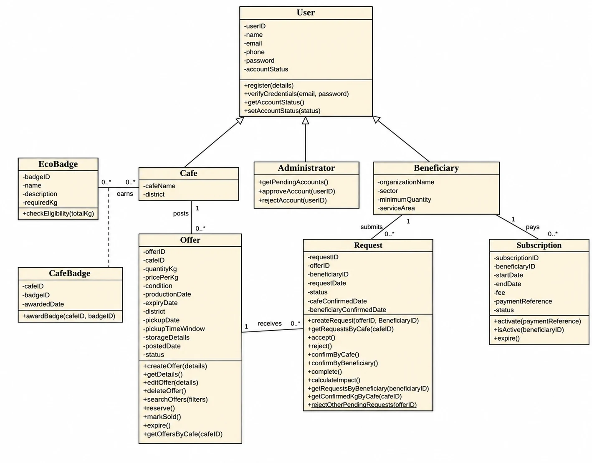

Baqaya
In progressA platform that connects cafés with anyone who can reuse their spent coffee grounds.
Challenge
Cafés lose budget on coffee grounds that end up in the trash, while farms, environmental projects and biochar makers could reuse them but have no easy way to find them.
My role
As team lead, I defined the project and its plan, compared alternative solutions, mapped the registration and offers events, and designed the system's class diagram.
Result
11 use cases documented. The design and documentation phases are complete, and development is next.
Requirements analysis
UML
Visual Paradigm
Team leadership
